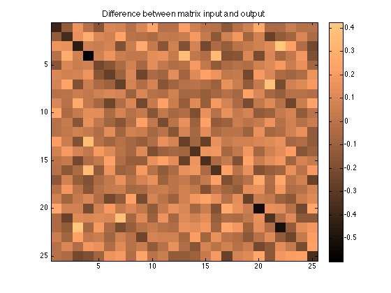

Contents
% Neearest Symmetric, Positive Definite matrices % % This tool saves your covariance matrices, turning them into something % that really does have the property you will need. That is, when you are % trying to use a covariance matrix in a tool like mvnrnd, it makes no % sense if your matrix is not positive definite. So mvnrnd will fail in % that case. % % But sometimes, it appears that users end up with matrices that are NOT % symmetric and positive definite (commonly abbreviated as SPD) and they % still wish to use them to generate random numbers, often in a tool like % mvnrnd. A solution is to find the NEAREST matrix that has the desired % property of being SPD. % % I see the question come up every once in a while, so I looked in the file % exchange to see what is in there. All I found was nearest_posdef. While % this usually almost works, it could be better. It actually failed % completely on most of my test cases, and it was not as fast as I would % like, using an optimization. In fact, in the comments to nearest_posdef, % a logical alternative was posed. That alternative too has its failures, % so I wrote nearestSPD.
nearestSPD works on any matrix, and it is reasonably fast.
As a test, randn generates a matrix that is not symmetric nor is it at all positive definite in general.
U = randn(100);
nearestSPD will be able to convert U into something that is indeed SPD, and for a 100 by 100 matrix, do it quickly enough
tic,Uj = nearestSPD(U);toc
Elapsed time is 0.005662 seconds.
The ultimate test of course, is to use chol. If chol returns a second argument that is zero, then MATLAB (and mvnrnd) will be happy!
[R,p] = chol(Uj); p
p =
0
As you can see, mvnrnd did not complain at all.
mvnrnd(zeros(1,100),Uj,1)
ans =
Columns 1 through 7
0.6206 -1.3824 0.8017 -0.2522 -1.6578 -3.7084 -3.7997
Columns 8 through 14
0.2101 0.3997 2.6344 -0.6991 -1.5288 -0.0655 1.2957
Columns 15 through 21
0.5635 -1.7118 1.4419 -1.9975 0.9702 -0.7824 -0.9111
Columns 22 through 28
-0.6243 -0.9555 -0.8648 3.9613 -2.9741 0.8544 -1.7191
Columns 29 through 35
2.2032 -1.1222 -0.8262 -2.1132 2.0091 -0.8174 -0.2515
Columns 36 through 42
-0.3103 -0.8486 -0.1352 -3.4751 1.5693 0.0114 -2.6613
Columns 43 through 49
-1.5377 -3.7468 1.7067 -1.0868 -0.3011 -1.2440 0.1904
Columns 50 through 56
-0.7234 0.9335 2.2027 0.9502 0.1257 -4.4532 -0.0755
Columns 57 through 63
-1.5667 -0.5757 -0.6353 -0.5836 -2.5437 -0.3126 2.4465
Columns 64 through 70
2.1601 0.4921 1.4246 3.0354 1.4341 1.5398 5.4932
Columns 71 through 77
0.2329 0.7502 0.4124 -1.5297 2.3390 -1.3886 -1.6488
Columns 78 through 84
-0.1357 -1.4652 -3.4085 -0.4108 0.1225 2.0608 2.4883
Columns 85 through 91
3.1590 -1.7421 -1.3297 5.2951 -0.9421 -0.2190 -1.3316
Columns 92 through 98
1.1916 -0.3938 -1.3629 -2.7727 0.6032 0.0956 -0.8630
Columns 99 through 100
-1.7379 -1.5663
nearest_posdef would have failed here, as U was not even symmetric, nor does it even have positive diagonal entries.
A realistic test case
Next I'll try a simpler test case. This one will have positive diamgonal entries, and it will indeed be symmetric. So this matrix is much closer to a true covariance matrix than that first mess we tried. And since nearest_posdef was quite slow on a 100x100 matrix, I'll use something smaller.
U = rand(25); U = (U + U')/2;
Really, it is meaningless as a covariance matrix, because it is clearly not positive definite. We can see many negative eigenvalues, and chol gets upset. So mvnrnd would fail here.
eig(U)' [R,p] = chol(U); p
ans =
Columns 1 through 7
-1.6748 -1.3845 -1.3380 -1.2144 -1.0673 -0.9856 -0.6934
Columns 8 through 14
-0.6398 -0.4336 -0.3471 -0.2484 -0.1653 -0.0160 0.1141
Columns 15 through 21
0.4482 0.5044 0.5448 0.6195 0.6827 0.9338 1.3431
Columns 22 through 25
1.4957 1.7989 2.0236 12.1344
p =
3
nearest_posdef took a bit of time, about 9 seconds on my machine. Admittedly, much of that time was wasted in doing fancy graphics that nobody actually needs if they just need a result.
tic,Um = nearest_posdef(U);toc
Elapsed time is 8.768167 seconds.
Is Um truly positive definite according to chol? Sadly, it is usually not.
[R,p] = chol(Um); p
p =
18
We can see how it failed, by looking at what eig returns.
eig(Um)
ans = 11.8426 + 0.0000i 1.7845 + 0.0000i 1.5092 + 0.0000i 1.2512 + 0.0000i 1.0957 + 0.0000i 0.7042 + 0.0000i 0.4589 + 0.0000i 0.3627 + 0.0000i 0.3080 + 0.0000i 0.2593 + 0.0000i 0.1571 + 0.0000i 0.0417 + 0.0000i 0.0387 + 0.0000i 0.0290 + 0.0000i 0.0190 + 0.0000i 0.0052 + 0.0000i 0.0021 + 0.0000i -0.0000 + 0.0000i -0.0000 - 0.0000i -0.0000 + 0.0000i 0.0000 + 0.0000i 0.0000 + 0.0000i -0.0000 + 0.0000i -0.0000 - 0.0000i 0.0000 + 0.0000i
There will usually be some tiny negative eigenvalues
min(real(eig(Um)))
ans = -1.8002e-16
and sometimes even some imaginary eigenvalues. All usually tiny, but still enough to upset chol.
max(imag(eig(Um)))
ans = 2.2548e-16
The trick suggested by Shuo Han is pretty fast, but it too fails. Since U is already symmetric, we need not symmetrize it first, but chol still gets upset.
Note that the slash used by Shuo was not a good idea. transpose would have been sufficient.
[V,D] = eig(U); U_psd = V * max(D,0) / V; [R,p] = chol(U_psd); p
p =
13
Whereas nearestSPD works nicely.
Uj = nearestSPD(U); [R,p] = chol(Uj);
nearestSPD returns a solution that is a bit closer to the original matrix U too. Thus comparing 1,2,inf and Frobenious norms, nearestSPD was better under all norms in my tests, even though it is designed only to optimize the Frobenious norm.
[norm(U - Um,1), norm(U - Um,2), norm(U - Um,inf), norm(U - Um,'fro')] [norm(U - Uj,1), norm(U - Uj,2), norm(U - Uj,inf), norm(U - Uj,'fro')]
ans =
3.6183 1.6779 3.6183 3.5082
ans =
3.1950 1.6748 3.1950 3.3743